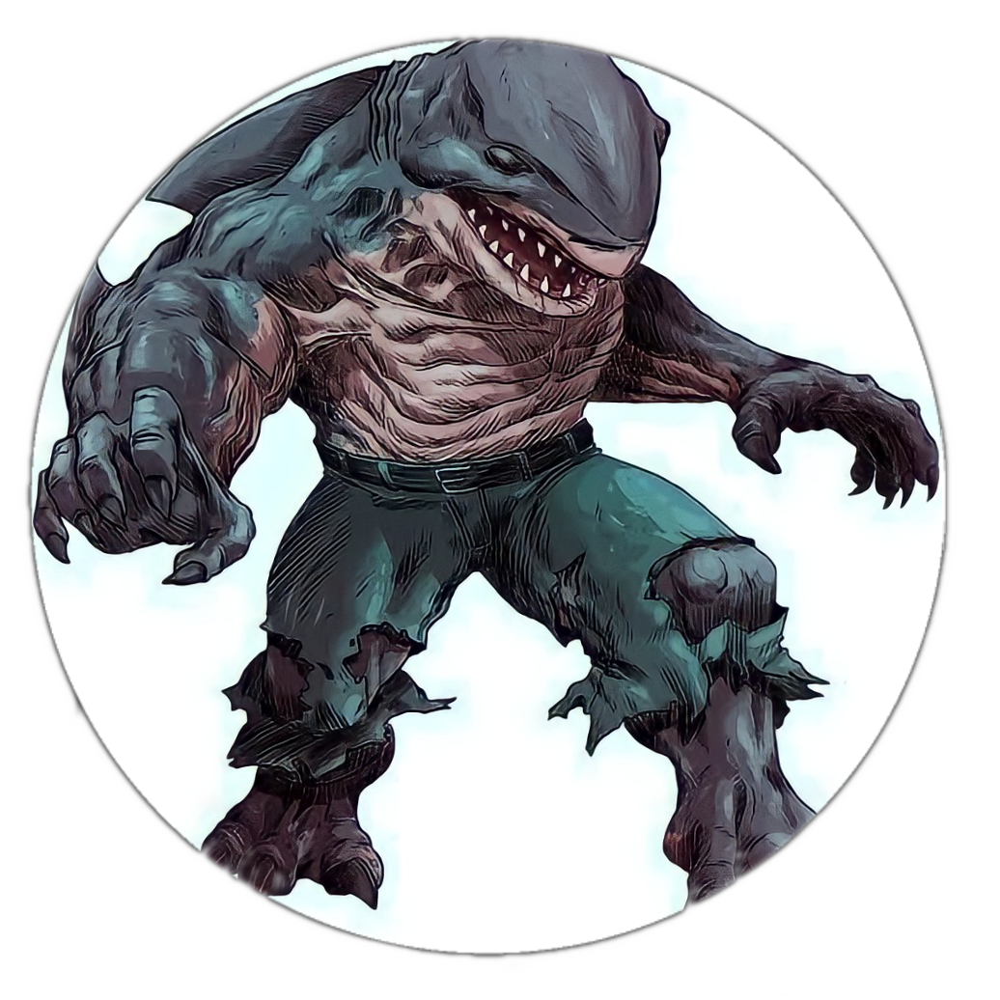

Tubarão Rei
Quem é?
O tubarão rei também, da Dc Comic, conhecido como Nananue, é um semideus, filho do Tubarão Deus do Pacifíco e de uma mulher nativa humana. Criado nos quadrinhos para ser um inimigo de Superboy, ele é uma fera violenta movido por desejos sanguinários. Já em sua aparição no novo filme do Esquadrão Suicida, Nananue é representado como um tubarão bobo e amigável, mesmo comendo humanos.
Aparições
Sua primeira aparição foi na revista Superboy#0, de 1994. Outra aparição foi em Espada de Atlantis, aonde o Tubarão rei ajuda Arthur Curry a se tornar o novo Aquaman. Também foi mostrado em Os Novos 52, demonstrado agora como um tubarão-martelo, filho do deus havaiano Kamo. Foi demonstrado também em Harley Quinn desenho animado de 2020. Sua mais recente introdução foi em Esquadrão Suicida, filme lançado em 2021. Teve sua aparição em The Flash também.
Poderes:
Tem uma força física elevada, tem um corpo altamente resistente e habilidades típicas de um peixe, capacidade também de respirar embaixo d’água e um nado super veloz, pode também repirar em terra firme. Seu equipamento é um short extra largo de golfe.
Gênero:
Seu gênero é bi-espécie.
Relacionamentos:
Nananue já teve relacionamentos com John Constantine. Mostrado em Liga da Justiça Sombria: Guerra de Apokolips.

John Constantine
Quem é?
John Constantine é um anti-herói da Dc Comics, muito querido pelos fãs, como inúmeras histórias fascinantes, uma curiosidade sua é que ele foi baseado no cantor Sting,conhecido por integrar a banda The Police, nasceu em Liverpool e teve uma infância bem traumática e desajustada, lidando com o alcoolismo do pai. Acabou se tornando um rebelde, e entrou em uma banda punk rock Membrana Mucosa. Foi assim que acabou se enveredando pelo caminho da magia e do ocultismo.
Aparições
Surgiu teoricamente em 1984 com a HQ The Saga of Swamp Things#25. Teve sua própria HQ denominada Hellblazer. Teve também sua aparição em Hábitos Perigosos, aonde Constantine descobre que tem câncer terminal, por fumar muitos cigarros. Teve também a aparição em os Novos 52, mesma história aonde tubarão-rei aparece. Com o fãs pedindo para a DC continuar com como o John era antes, sem censuras, ele começou a ser publicado pela linha DC Black Label, aonde da DC lançava conteúdos mais adultos. Apareceu em Universo de Sandman, aonde incluem Lúcifer. Sua revista mais nova se chama Hellblazer e é lançada no Brasil pela Panini Comics. Aparece também na Tv com a série Constantine. Outra série que participa é a Dc Legends of Tomorrow, e em Arrow. No cinema aparece em Liga da Justiça Sombria e Constantine: City of Demons.
Poderes:
Originalmente era um humano normal com muitos conhecimentos em magias ocultas. Porém, ele acabou ganhando "poderes" demoníacos depois de uma transfusão de sangue feita com o demônio Nergal. Por conta disso, ele é capaz de se regenerar mais rapidamente que o habitual. possui muito conhecimento e experiência com as artes místicas. Apesar de evitar usar feitiços por conta de seus traumas passados, ele é capaz de realizar encantamentos, maldições e até mesmo ler mentes. Versado no campo da demonologia, ele também é um exorcista treinado, além de ter conhecimentos básicos no campo da hipnose e do combate corpo-a-corpo.
Gênero:
Bi-espécie e bissexual.
Relacionamentos:
Constantine teve diversos relacionamentos, como Angela Spatchcock (Vertigo Universe), Anne-Marie Flynn (Arrowverse), Asa (Prime Earth), Danita Wright (New Earth), Desmond (Arrowverse), Emma (New Earth), Epiphany Greaves (DC Legends), Epiphany Greaves (Vertigo Universe), Helena Bertinelli (Prime Earth), Kathryn Ryan (New Earth), Margaret Ames (Prime Earth), Marie Cameron (New Earth), Marj (New Earth), Marj (Prime Earth), Mary Martin (New Earth), Nanaue (DC Animated Movie Universe), Nicolas Nolan (Prime Earth), Oliver (Prime Earth), Rosacarnis (Arrowverse), Sara Lance (Arrowverse), Stanley Manor (Vertigo Universe), Veronica Delacroix (Prime Earth), Zari Tarazi (Arrowverse), Zari Tarazi (Arrowverse), Zatanna Zatara (DC Animated Movie Universe), Zatanna Zatara (DC Animated Movie Universe), ZatannaZatara (DC Bombshells), Zatanna Zatara (DC Bombshells), Zatanna Zatara (DCeased)Zatanna Zatara (DCeased), Zatanna Zatara (New Earth), Zatanna Zatanna Zatara (Prime Earth), Zatanna Zatara (Prime Earth).

Mulher Maravilha
Quem é?
A Mulher-Maravilha tem uma das origens que mais sofreu alterações na história dos quadrinhos, devido às várias atualizações que a personagem sofreu ao longo das décadas. Inicialmente, Diana foi criada de maneira mágica, a partir de uma figura de argila, na misteriosa Ilha Paraíso – um reino escondido, mais tarde chamado de Themyscira –, por sua mãe, a Rainha Hipólita. Quando adulta, durante o período da Segunda Guerra Mundial, ela foi enviada ao mundo dos homens (no caso, os Estados Unidos), como embaixadora da paz e para lutar contra inimigos como os alemães e os japoneses. Durante diversos períodos e reformulações, ela usou a identidade secreta de Diana Prince, que teve várias encarnações: enfermeira, secretária, agente do Departamento de Defesa e até dona de uma butique de moda. Em sua última reformulação, ocorrida em 2011, a Mulher-Maravilha tornou-se uma semideusa, filha de Hipólita e do deus grego, Zeus. Com atitudes mais violentas, ela é considerada a nova encarnação do deus da guerra.
Aparições
Sua primeira aparição foi em All Star Comics 8 (dezembro de 1941), aparição em Sensation ComicVol1, em Mulher-Maravilha Vol1, em Comic Cavalcade, Mulher Maravilha Vol2, Mulher Maravilha Vol3, Mulher Maravilha Vol4, Mulher Maravilha Vol5.
Poderes:
Super-força, Invulnerabilidade, Fator de Cura, Sentidos Aprimorados, Agilidade Sobre-Humana, Projeção e Manipulação de Energia, criação de manipulação de eletricidade,voo,super-velocidade e longevidade.
Gênero:
Bissexual.
Relacionamentos:
Steve Trevor, Superman, Batman, Kaisa, Aquaman, Trevor Barnes, Nemesis, Keith Griggs, Mala, Batwoman.

Wiccano
Quem é?
William “Billy” Kaplan, ou Wiccano, é filho da Feiticeira Escarlate. Billy é filho de Jeff e Rebecca Kaplan. Porém, sua alma tem uma origem um pouco confusa. Antes de nascer, Billy e seu irmão Thomas eram filhos de Wanda Maximoff e Visão. Wanda com seu imenso poder, criou os seus filhos a partir de sua imaginação e fragmentos extraídos da alma do demônio Mephisto. Ao descobrir tal criação, Mephisto “engoliu” de volta os fragmentos fazendo com que as crianças deixassem de existir. Mais tarde as duas almas reencarnaram nos corpos de Billy Kaplan e Thomas Shepherd(Irmão de Billy).
Aparições
Teve sua primeira aparição em Jovens Vingadores#1(2005) utilizando o codinome Asgardiano, pois era equivalente a Thor e era parecido com ele.
Poderes:
Originalmente, os poderes de Billy eram baseados exclusivamente na geração e manipulação de eletricidade. Com o tempo, ele percebeu que isso fazia parte de um dom quase místico, e com isso, aprendeu a manipular as bases da magia. Ou seja, Billy pode controlar o básico, invocando elementos da natureza, realizando teletransporte, voando, erguendo escudos e construtos sólidos, se curando e prevendo o futuro. Além disso, assim como Wanda, ele possui a habilidade de manipulação da realidade, o que significa que ele pode distorcer tudo que existe apenas com um pensamento.
Gênero:
Gay.
Relacionamentos:
Casado com Hulking, membro dos Jovens Vingadores que tem o poder do Hulk.
Bat Woman
Quem é?
Nas primeiras HQs Bat Woman era a mulher de Batman, porém na saga dos novos 52, a personagem ganha destaque em Crise Final, aonde Batman é morto por Darkseid. Sem Bruce Wayne Bat Woman aparece. A heroína é filha de Jacob Kane, primo de primeiro grau de Martha Wayne, a mãe do Homem-Morcego. Apesar da herança dos Kane, uma tradicional família de Gotham, Jacob seguiu uma bem-sucedida carreira no exército, onde conheceu sua esposa, Gabriele, com quem teve Kate e Beth antes de se aposentar como coronel. Anos depois, a família Kane foi vítima de um sequestro que terminou com a morte de Gabriele e o desaparecimento de Beth. Inspirada pelo luto, a futura vigilante se alistou e seguiu uma curta carreira até ser expulsa da instituição por ser homossexual.
Aparições
Seu primeiro aparecimento foi em Era da Prata: Detective Comics#233, em 1956, apareceu também em Crise Final e está atualmente na Série Bat Woman. Poderes: Intelecto de nível genial, Pico da condição física humana, Artista marcial altamente habilidoso, Detetive altamente habilidoso. Utiliza equipamentos e armas de alta tecnologia.
Poderes:
Intelecto de nível genial, Pico da condição física humana, Artista marcial altamente habilidoso, Detetive altamente habilidoso. Utiliza equipamentos e armas de alta tecnologia.
Gênero:
Lésbica
Relacionamentos:
Teve relacionamentos com a Mulher Maravilha, com a Bartender Reagan e nos quadrinhos é casada com Maggie Sawyer